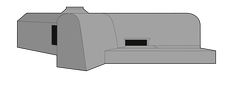

Aan de Noorderpier van Hoek van Holland staat sinds 1943 een grote Duitse bunker. Deze bunker, een geschutsbunker van het bouwtype 611, maakte tijdens de Tweede Wereldoorlog deel uit van de beruchte 'Atlantikwall'.
Home
Galerij
Info